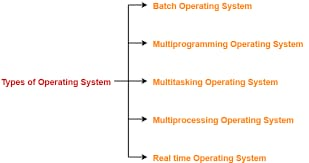

Operating system
links

- Batch Operating System
This type of operating system does not interact with the computer directly. There is an operator which takes similar jobs having same requirement and group them into batches. It is the responsibility of operator to sort the jobs with similar needs.
- Time-Sharing Operating Systems
Each task is given some time to execute, so that all the tasks work smoothly. Each user gets time of CPU as they use single system. These systems are also known as Multitasking Systems. The task can be from single user or from different users also. The time that each task gets to execute is called quantum. After this time interval is over OS switches over to next task.
- Distributed Operating System
Distributed systems use many processors located in different machines to provide very fast computation to its users.
- Network Operating System runs on a server
It provides the capability to serve to manage data, user, groups, security, application, and other networking functions.
- Real-time Operating System
Real-time operating systems are also known as multitasking operating systems. The normal operating system is responsible for managing the hardware resources of a computer. The RTOS perform these tasks, but it is especially designed to run applications at a scheduled or precise time with high reliability.